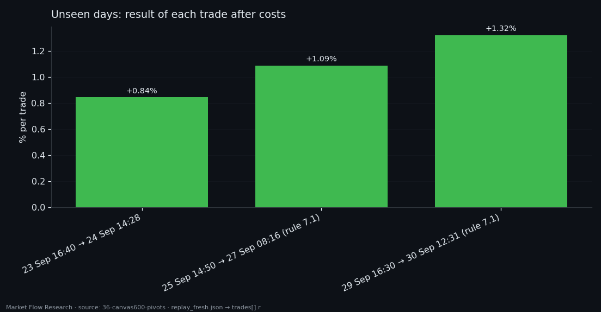
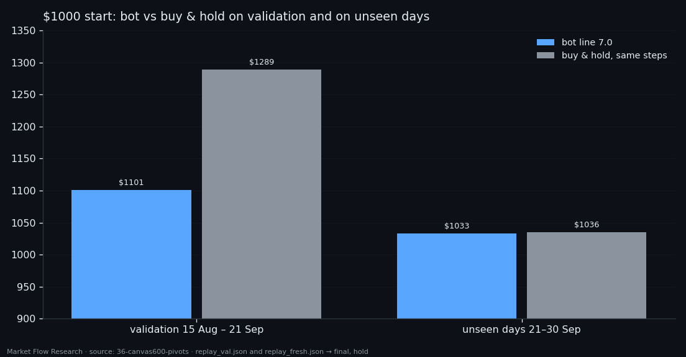

A Buy-Only Bot on Nine Days It Never Saw — Three Take-Profits and a Draw With Buy & Hold
The buy-only bot from the previous study had one weakness we wrote down plainly: its window, threshold and stop were chosen on the same 38 validation days it was then scored on. So we froze it and let it walk through the days the data collector recorded after validation ended — 21 to 30 September 2026, nine days nobody had looked at. It opened three trades and closed all three at take-profit, no stop-outs: $1000 became $1032.92. Buying and holding over the same steps gave $1035.51. A clean run, and a draw with the market.
① The frozen bot and the days it never saw
Nothing was retrained or re-tuned. The bot is the one exported from the study: the `BUY_pos` network at epoch 9 reads a canvas of 1,100 records of 100 seconds (about 30 hours of order book and price, 8 features) every 10 minutes and gives the probability that this moment is inside a 2.3% bottom zone. The signal is the sum of those probabilities over the last 18 steps (180 minutes); the bot buys when the sum reaches 11.74. Take-profit sits 1.9% above the lowest price after entry — if price keeps falling after the buy, the target walks down with it — and the stop is 2% below entry.
The test stretch starts the step after the last validation step: 21.09 05:00 to 30.09 16:10 UTC. The model never trained on it, and the window, threshold and stop were never chosen on it. The collector had gaps — 68 of 1,364 steps have no 100-second record ending at them, the longest a 54-step hole overnight on 28–29 September — and the bot simply skips those, exactly as it did on validation. Price went from 81,400 at the first step to a high of 87,278 on 21 September and ended at 84,385.

② Three entries, three take-profits
The signal fired on 41 steps, in three clusters: 23 September afternoon, 25 September afternoon and evening, 29 September afternoon. The first step of each cluster opened a trade; the rest of the cluster only confirmed the position.
23 Sep 16:40, bought at 84,027.71, closed at take-profit on 24 Sep 14:28 at 84,856.60 — +0.85%. 25 Sep 14:50, bought at 83,811.35, closed on 27 Sep 08:16 at 84,844.01 — +1.09%. 29 Sep 16:30, bought at 83,258.01, closed on 30 Sep 12:31 at 84,476.79 — +1.32%. Costs are inside these numbers: 0.05% fee and 0.02% slippage per side.
Two of the three entries exist only because of a rule added after validation (rule 7.1, the next article): the old fake-signal filter would have thrown both clusters away, and the bot would have made one trade and $1008.45 in nine days.

③ $1032.92 against $1035.51 — what a draw tells us
On validation, where the parameters were picked, the bot ended at $1100.85 against $1289.36 for buy and hold over the same steps: nine trades, nine take-profits, and still far behind a market that rose 29%. On the nine unseen days it ended at $1032.92 against $1035.51. The gap closed — not because the bot got better, but because the market rose less.
What the run does show: the signal did not fall apart outside the days it was tuned on. Every entry was followed by a rise of at least 1.9% from the lowest price after the buy, and no trade hit the stop. The bot was out of the market most of the time and still matched holding.
What it does not show: three trades over nine days is far too few to call a win rate. A fair coin gives three heads in a row one time in eight. This is a check that nothing broke, not proof of an edge. The next tests in this series move the same idea to both sides of the market and to live data.

Reproduce this study
- Research log (.md, Ukrainian): goal, data, plan, scripts, every confirmed stage and table — enough to rerun the study
- Reproduction kit (.zip): the study's scripts, project rules and base scripts that build every class
- bot-line-7.0.md (.md, Ukrainian): the exported bot built from this study — model, signal, trade rules, how to rebuild it from raw data
If this changed how you read the tape, the natural next step is Volume Is the Fuel — Not the Steering Wheel — We recorded the Binance order book every second for six coins over five months and ran eighteen tests on what volume really does.
Volume Is the Fuel — Not the Steering Wheel
We recorded the Binance order book every second for six coins over five months and ran eighteen tests on what volume really does.
About Market Research Lab — What We Collect and Why
Most market commentary is storytelling.
From Calm to Calm: a Standard for What Counts as a Signal (BTC)
We stopped defining market signals with a stopwatch.
The Wall That Goes Quiet: What Resting Liquidity Predicts
We measured resting limit liquidity sitting on both sides of the book second by second across six coins, and asked the only question that matters:….
Comments
Discussion is powered by GitHub. Enable it by adding secrets/giscus.json (repo IDs from giscus.app).